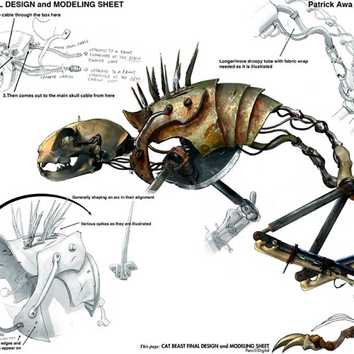
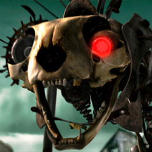
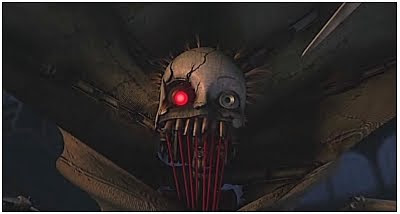
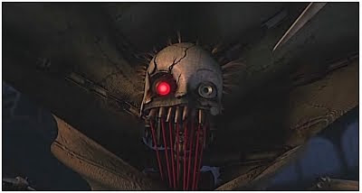
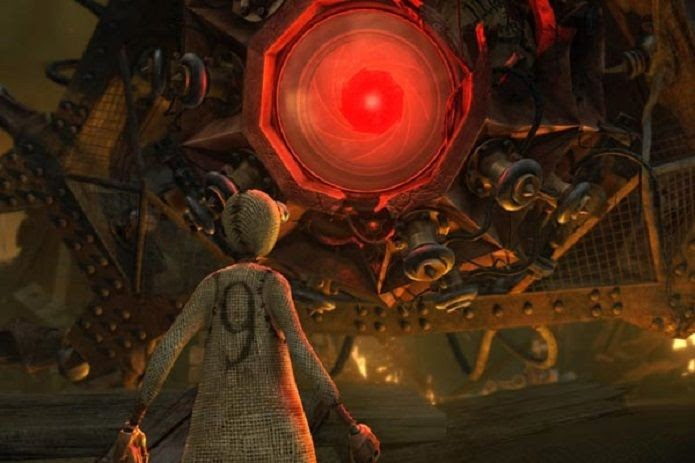

Personajes Malos
Gato Bionico
 Un gato construido a partir de desechos de metal, con unas fieras zarpas y una enorme cuchilla en el abdomen.
Tejedor
 

El segundo enemigo mas fuerte, atrapa a los personajes con y los y los guada dentro de su tela, tiene la habilidad especial de controlar y envaucar a sus rivales con los cuerpos de otros muñecos de trapo.
Master
El rival mas fuerte, este es el creador de los anteriores enemigos y el creador de las maquinas que destruyeron el mundo